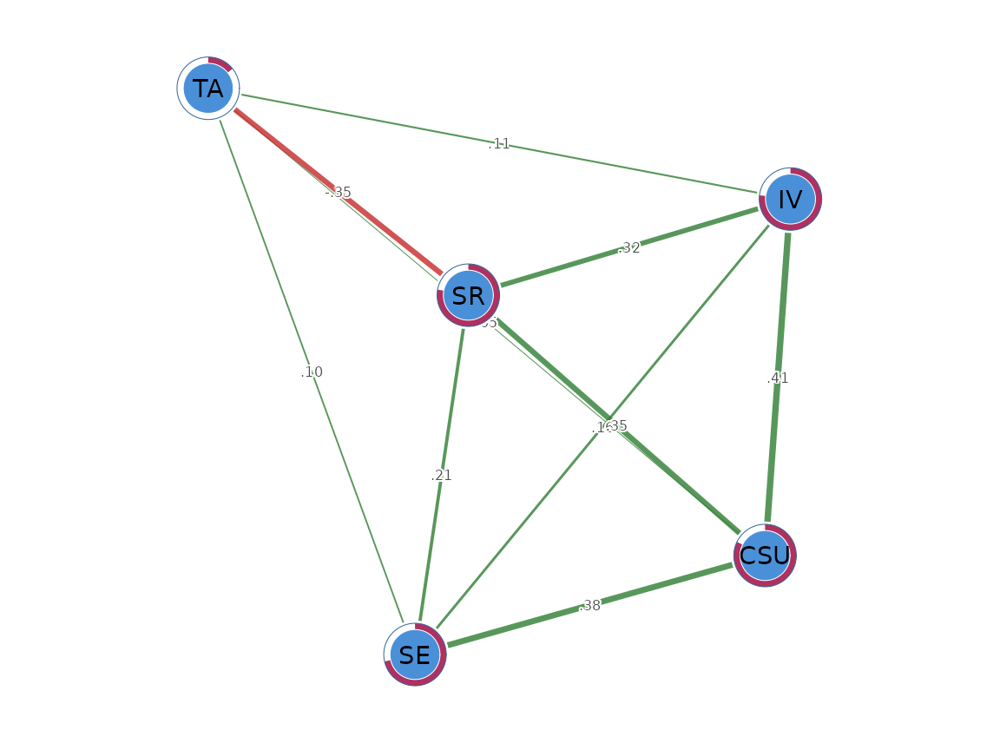

Gaussian graphical models: estimation and interpretation
Written by Mohammed Saqr and Sonsoles López-Pernas
Source:vignettes/gaussian-graphical-models.Rmd
gaussian-graphical-models.RmdConstructs measured by self-report questionnaires, such as motivation, self-efficacy, strategy use and anxiety, are correlated with one another, and a correlation matrix cannot separate the associations that are direct from those that run through other constructs. Motivation and achievement may correlate because both depend on effort and prior achievement rather than because of any relation of their own. A Gaussian graphical model (GGM) addresses this by estimating, for every pair of variables, the partial correlation that remains after all other variables in the model are held constant. Pairs whose partial correlation is indistinguishable from zero are left unconnected, so the resulting network shows which associations each variable has after the others have been accounted for (Epskamp & Fried, 2018).
This article estimates a regularized GGM for five self-regulated learning constructs. It reads the edges, contrasts them with the ordinary correlations, describes the position of each construct through centrality and predictability, and examines whether the conclusions depend on the correlation estimator, on a post-hoc edge threshold, and on the assumption of normality.
Data
SRL_GPT holds 300 sets of responses to the Motivated
Strategies for Learning Questionnaire. Each value is a construct score,
the mean of that construct’s items on a scale from 1 to 7. The responses
were generated by a large language model (GPT) in a study of how such
models answer psychological surveys (Saqr, 2025); they serve here as a
well-structured example and are not evidence about students.
-
Nodes: five construct scores, each treated as
continuous:
-
CSU, cognitive strategy use; -
IV, intrinsic value; -
SE, self-efficacy; -
SR, self-regulation; -
TA, test anxiety.
-
- Observations: one row per respondent; the data are complete.
head(SRL_GPT)
#> CSU IV SE SR TA
#> 1 5.307692 5.666667 5.777778 5.333333 4.00
#> 2 5.846154 6.444444 6.000000 5.777778 4.00
#> 3 6.615385 6.666667 6.222222 6.333333 3.25
#> 4 5.692308 6.555556 6.333333 5.555556 4.50
#> 5 4.384615 5.555556 4.888889 4.777778 4.00
#> 6 4.846154 5.444444 5.666667 5.111111 3.50Each score averages several items and takes many distinct values,
which makes the continuous treatment defensible. Item-level ordinal
responses would call for polychoric correlations
(cor_method = "auto").
The model
For variables with covariance matrix , the precision matrix holds the conditional structure. The partial correlation between and given all other variables is
and under multivariate normality means that and are independent once the remaining variables are known. An edge in the network is a non-zero partial correlation.
In a sample, every partial correlation differs from zero by chance. The graphical lasso (Friedman et al., 2008) estimates the precision matrix with a penalty on the absolute size of its off-diagonal entries,
where is the sample correlation matrix and sets how strongly small entries are pulled to exactly zero. The penalty is chosen from a path of candidate values by the extended Bayesian information criterion (EBIC; Foygel & Drton, 2010),
where is the Gaussian log-likelihood, the number of edges, the sample size and the number of nodes. The hyperparameter (0.5 by default) adds a penalty for model complexity beyond BIC; larger values favour sparser networks.
Which constructs are directly associated?
psychnet() with method = "glasso" estimates
the EBIC graphical lasso. The defaults are Pearson correlations,
pairwise-complete handling of missing values and
.
net <- psychnet(data = SRL_GPT, method = "glasso")
summary(net)
#> <psychnet> glasso network
#> nodes: 5 edges: 10 (undirected)
#> lambda: 0.00861 gamma: 0.5
#> optimality (KKT residual): 2.21e-10
#> edge weight: range [-0.350, 0.412], mean 0.174The selected penalty is , and at this penalty all 10 possible pairs keep an edge. The edge weights range from -0.350 to 0.412. The edge table lists every pair with its partial correlation:
as.data.frame(net)
#> from to weight
#> 1 CSU IV 0.41166866
#> 2 CSU SE 0.38290223
#> 3 IV SE 0.15992605
#> 4 CSU SR 0.35481359
#> 5 IV SR 0.31909443
#> 6 SE SR 0.20767208
#> 7 CSU TA 0.04906668
#> 8 IV TA 0.11058735
#> 9 SE TA 0.09871818
#> 10 SR TA -0.34985157The four learning constructs form a positively connected cluster. The
strongest edge joins cognitive strategy use and intrinsic value (0.412),
followed by cognitive strategy use with self-efficacy (0.383) and with
self-regulation (0.355): respondents with higher strategy use report
higher values on these constructs even when the other three variables
are equal. Self-regulation and test anxiety are joined by the only
negative edge (-0.350): at equal levels of the other constructs, higher
self-regulation goes with lower test anxiety. The remaining edges of
test anxiety are small and positive, with CSU (0.049),
SE (0.099) and IV (0.111), too small to carry
a substantive interpretation on their own.
How do partial correlations differ from correlations?
The marginal correlation network, method = "cor",
contains the same pairs without any adjustment and shows what the GGM
has removed.
as.data.frame(psychnet(data = SRL_GPT, method = "cor"))
#> from to weight
#> 1 CSU IV 0.86099753
#> 2 CSU SE 0.83458495
#> 3 IV SE 0.78460033
#> 4 CSU SR 0.84743518
#> 5 IV SR 0.82163456
#> 6 SE SR 0.77913881
#> 7 CSU TA -0.13851086
#> 8 IV TA -0.11372136
#> 9 SE TA -0.09672104
#> 10 SR TA -0.30196344The learning constructs correlate between 0.779 and 0.861, two to five times the size of their partial correlations: much of each pairwise association is shared with the other constructs. Test anxiety correlates negatively with all four learning constructs (-0.097 to -0.302), yet three of its partial correlations are positive. Once self-regulation is held constant, the negative association of test anxiety with the learning constructs is carried by self-regulation alone. A correlation network would have attributed it to every construct.
Is the fitted network the optimum of its objective?
The graphical lasso is solved iteratively, so a fitted network is an
approximation to the minimum of the objective above. Any solution must
satisfy the problem’s optimality (Karush–Kuhn–Tucker) conditions; the
amount by which a fitted network violates them is its certificate, and a
value near zero shows that the network is the optimum of its objective.
certificate() reports it, with
certified = TRUE when it is below
.
certificate(net)
#> method certificate kind certified
#> 1 glasso 2.213389e-10 kkt TRUEThe violation is , so the reported edges are the graphical-lasso solution for this penalty and not an artefact of an unfinished optimization. The certificate concerns the computation only; it says nothing about sampling uncertainty or about whether the model’s assumptions hold.
Which constructs are most connected?
net_centralities() summarizes each node’s edges.
Strength is the sum of absolute edge weights; expected influence is the
signed sum, in which negative edges offset positive ones (Robinaugh et
al., 2016).
net_centralities(net)
#> node strength expected_influence
#> 1 CSU 1.1984512 1.19845117
#> 2 IV 1.0012765 1.00127649
#> 3 SE 0.8492185 0.84921854
#> 4 SR 1.2314317 0.53172852
#> 5 TA 0.6082238 -0.09147935Self-regulation has the largest strength (1.231), followed by cognitive strategy use (1.198). Their expected influences differ: cognitive strategy use has only positive edges, so its expected influence equals its strength, while the negative edge of self-regulation with test anxiety lowers its expected influence to 0.532. Test anxiety has the smallest strength (0.608) and a slightly negative expected influence (-0.091). Self-regulation is therefore the construct most strongly tied to the others, and also the one through which test anxiety connects to the network. Centrality describes the estimated graph; it does not identify causes or intervention targets.
How well is each construct predicted by the others?
Predictability is the proportion of a node’s variance explained by
its neighbours,
(Haslbeck & Waldorp, 2018). For a GGM it follows from the precision
matrix,
,
so net_predict() needs no further data.
net_predict(net)
#> node type metric predictability accuracy
#> 1 CSU gaussian R2 0.8217840 NA
#> 2 IV gaussian R2 0.7690346 NA
#> 3 SE gaussian R2 0.7142811 NA
#> 4 SR gaussian R2 0.7786477 NA
#> 5 TA gaussian R2 0.1421163 NAThe other four constructs explain 82% of the variance in cognitive strategy use (), 78% in self-regulation, 77% in intrinsic value and 71% in self-efficacy, but only 14% in test anxiety (). Test anxiety is largely independent of the learning constructs, which matches its weak edges. These are in-sample values; prediction of new respondents would need a separate validation sample.
What does the network look like?
cograph::splot() draws the fitted network. With
psych_styling = TRUE, positive edges are green, negative
edges red, edge width follows the absolute weight, and the ring around
each node shows its predictability.
cograph::splot(net, psych_styling = TRUE)
The figure shows the dense positive cluster of the learning constructs and the single negative edge to test anxiety. Node positions come from a layout algorithm, and the distance between two nodes carries no statistical meaning.
Do the conclusions depend on the correlation estimator?
Spearman correlations use ranks and are less affected by skewed
distributions and extreme values. Refitting with
cor_method = "spearman" tests whether the structure depends
on the Pearson estimator.
spearman_net <- psychnet(data = SRL_GPT, method = "glasso",
cor_method = "spearman")
summary(spearman_net)
#> <psychnet> glasso network
#> nodes: 5 edges: 9 (undirected)
#> lambda: 0.01882 gamma: 0.5
#> optimality (KKT residual): 2.67e-10
#> edge weight: range [-0.237, 0.424], mean 0.192
as.data.frame(spearman_net)
#> from to weight
#> 1 CSU IV 0.41037571
#> 2 CSU SE 0.42434529
#> 3 IV SE 0.12821527
#> 4 CSU SR 0.32164519
#> 5 IV SR 0.34602908
#> 6 SE SR 0.18400655
#> 7 IV TA 0.07280225
#> 8 SE TA 0.07509761
#> 9 SR TA -0.23654039The rank-based model selects a larger penalty
()
and keeps 9 edges. The positive cluster of learning constructs and the
negative self-regulation–test anxiety edge remain; the latter weakens
from -0.350 to -0.237. The weakest Pearson edge,
CSU–TA (0.049), is absent. The main structure
does not depend on the correlation estimator, whereas the weak edges of
test anxiety do.
What does a post-hoc threshold change?
A threshold removes every edge whose absolute weight falls below a chosen value after estimation. It is a reporting decision, to be fixed before the results are seen, and not part of model selection.
threshold_net <- psychnet(data = SRL_GPT, method = "glasso", threshold = 0.1)
threshold_net
#> <psychnet> glasso network
#> nodes: 5 edges: 8 (undirected)
#> lambda: 0.00861 gamma: 0.5
#> optimality: unavailable for post-threshold graph (pre-threshold residual 2.21e-10)
as.data.frame(threshold_net)
#> from to weight
#> 1 CSU IV 0.4116687
#> 2 CSU SE 0.3829022
#> 3 IV SE 0.1599260
#> 4 CSU SR 0.3548136
#> 5 IV SR 0.3190944
#> 6 SE SR 0.2076721
#> 7 IV TA 0.1105874
#> 8 SR TA -0.3498516With a threshold of 0.1 the network keeps 8 edges; the
CSU–TA (0.049) and
SE–TA (0.099) edges are removed, and the
penalty is unchanged. The thresholded network is no longer the solution
of the graphical-lasso objective, so the printout reports optimality as
unavailable and quotes the residual before thresholding
(),
and certificate(threshold_net) returns NA. A
thresholded network must be reported as such, not as the EBIC
selection.
Do the conclusions depend on normality?
The GGM’s conditional-independence interpretation rests on
multivariate normality. The nonparanormal model (Liu et al., 2009)
relaxes it: each variable is mapped to normal scores through its ranks,
and the same EBIC graphical lasso is fitted to the transformed data.
method = "huge" fits this model.
npn_net <- psychnet(data = SRL_GPT, method = "huge")
summary(npn_net)
#> <psychnet> huge network
#> nodes: 5 edges: 10 (undirected)
#> lambda: 0.008559 gamma: 0.5
#> optimality (KKT residual): 2.47e-10
#> edge weight: range [-0.343, 0.426], mean 0.172
as.data.frame(npn_net)
#> from to weight
#> 1 CSU IV 0.42556520
#> 2 CSU SE 0.40615961
#> 3 IV SE 0.12908167
#> 4 CSU SR 0.34672549
#> 5 IV SR 0.31792725
#> 6 SE SR 0.19589994
#> 7 CSU TA 0.02390372
#> 8 IV TA 0.12511890
#> 9 SE TA 0.09634264
#> 10 SR TA -0.34267471
certificate(npn_net)
#> method certificate kind certified
#> 1 huge 2.471392e-10 kkt TRUEThe nonparanormal network keeps all 10 edges with weights from -0.343
to 0.426, and its certificate
()
shows that it is the optimum of its objective. The positive learning
cluster and the negative self-regulation–test anxiety edge are unchanged
in sign and close in size. The CSU–TA edge
halves from 0.049 to 0.024, which again marks it as the least stable
edge in the network. Departures from normality do not drive the main
conclusions.
Reporting the analysis
A report states the variables and their measurement scale, the sample size, the correlation estimator, the treatment of missing data, the estimator and the value of , and any threshold. The edges are reported as partial correlations, with centrality and predictability defined before they are interpreted.
In this analysis, an EBIC graphical lasso () on Pearson correlations of 300 complete responses selected and kept all 10 edges. The largest positive partial correlation joined cognitive strategy use and intrinsic value (0.412) and the only negative one joined self-regulation and test anxiety (-0.350). Rank-based and nonparanormal fits preserved this structure and changed only the weak edges of test anxiety.
Assumptions and when to use the GGM
- The variables are continuous, or ordinal with enough categories to
be treated as continuous; otherwise use polychoric correlations
(
cor_method = "auto"), the Ising model for binary data, or a mixed graphical model when continuous and binary variables are combined. - The joint distribution is approximately multivariate normal; the nonparanormal model is the sensitivity check when it is not.
- Observations are independent. Repeated measures of the same persons call for a model that separates within- and between-person variation, such as the panel graphical VAR.
- The regularized GGM suits analyses where a sparse, readable network
is the goal. When the sample is large relative to the number of
variables and unshrunk partial correlations are wanted, the stepwise
model selection of
method = "ggm"is the alternative. - An edge is a conditional association, not a causal effect, and a missing edge shows that the data do not support a unique association, not that the two variables are unrelated.
Mathematical details
Optimality conditions
Write . At the minimum of the graphical-lasso objective the diagonal satisfies , and for the off-diagonal entries
certificate() returns the largest violation of these
conditions. Because the objective is strictly convex, its minimum is
unique, and a violation near zero identifies it without reference to any
other software.
References
Epskamp, S., & Fried, E. I. (2018). A tutorial on regularized partial correlation networks. Psychological Methods, 23(4), 617-634. doi:10.1037/met0000167
Foygel, R., & Drton, M. (2010). Extended Bayesian information criteria for Gaussian graphical models. Advances in Neural Information Processing Systems, 23, 604-612.
Friedman, J., Hastie, T., & Tibshirani, R. (2008). Sparse inverse covariance estimation with the graphical lasso. Biostatistics, 9(3), 432-441. doi:10.1093/biostatistics/kxm045
Haslbeck, J. M. B., & Waldorp, L. J. (2018). How well do network models predict observations? On the importance of predictability in network models. Behavior Research Methods, 50(2), 853-861. doi:10.3758/s13428-017-0910-x
Liu, H., Lafferty, J., & Wasserman, L. (2009). The nonparanormal: Semiparametric estimation of high dimensional undirected graphs. Journal of Machine Learning Research, 10, 2295-2328.
Robinaugh, D. J., Millner, A. J., & McNally, R. J. (2016). Identifying highly influential nodes in the complicated grief network. Journal of Abnormal Psychology, 125(6), 747-757. doi:10.1037/abn0000181
Saqr, M. (2025). Delving into the psychology of machines: Exploring the structure of self-regulated learning via LLM-generated survey responses. Computers in Human Behavior, 173, 108769. doi:10.1016/j.chb.2025.108769